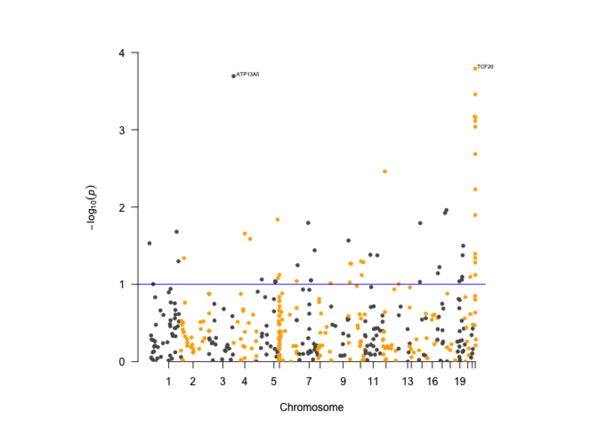

Chapter 2 An Overview of Regression with Toy Examples
Note: In order to run codes in this notebook, please make sure you have downloaded the “bigcare-main” folder from GitHub and have RStudio installed on your laptop.
This notebook demonstrates two basic statistical regression models using toy examples.
- case/control study by logistic regression
- quantitative trait study by linear regression
We use only R codes in this notebook.
2.1 Environment Setting and Packages
Before we can run any analysis, we need to set the working directory path in RStudio Console to the downloaded “bigcare-main” folder and load the necessary R packages. To setup the working directory, make sure you run the following codes in R Terminal.
In this notebook, we will use R packages “data.table”, “GEOquery”, “plyr” and “ROCR”. You can install the R base packages using install.packages(). “GEOquery” is a BioConductor package that needs to be installed with BioManager. The codes below show you how to install these packages in R. They are commented out with # here, so if you want to run them on your own laptop, please remove # before the codes.
install.packages("data.table")
install.packages("plyr")
install.packages("ROCR")
if (!require("BiocManager", quietly = TRUE))
install.packages("BiocManager")
BiocManager::install("GEOquery")After installation, The list of packages are loaded with library() function.
The following code might generate multiple messages when loading the packages, such as “The following objects are masked from XXX”, which is normal. You can ignore them.
2.2 Toy Example Data
To illustrate the statistical methods, we will use a small dataset of 60 samples with both continuous and binary variables. This dataset is a microarray expression data downloaded from GSE1378. It contains 60 patients with ER-positive primary breast cancer treated with tamoxifen monotherapy for 5 years. We only extracted the recurrent status and gene expression of 3 genes to this toy example data. You can load this extracted data as below with fread function:
We could take a view at the data. head function prints the first 6 rows of the dataset. summary function provides summary statistics of the numeric variables. Column status is a binary variable indicating whether the sample is recurrence or non-recurrence. The last three columns are expression of three genes HOXB13, IL17BR and NHLH1, so they are continuous.
| sampleID | status | time | ratio_group | gene_HOXB13 | gene_IL17BR | gene_NHLH1 |
|---|---|---|---|---|---|---|
| GSM22365 | Status=recur | 75 | High HOXB13:IL17BR ratio | -2.8968509 | -2.4744445 | -0.1214872 |
| GSM22366 | Status=recur | 21 | High HOXB13:IL17BR ratio | -2.9811459 | -2.1587305 | -0.6215178 |
| GSM22367 | Status=recur | 38 | Low HOXB13:IL17BR ratio | -1.3201379 | 1.0535341 | 0.0583918 |
| GSM22368 | Status=recur | 43 | High HOXB13:IL17BR ratio | 0.5141317 | -1.7643865 | 0.0073468 |
| GSM22369 | Status=non-recur | 169 | Low HOXB13:IL17BR ratio | -3.0522629 | 0.8341051 | -0.5538062 |
| GSM22370 | Status=recur | 42 | Low HOXB13:IL17BR ratio | -3.2735509 | -0.9047099 | 0.8428828 |
| sampleID | status | time | ratio_group | gene_HOXB13 | gene_IL17BR | gene_NHLH1 | |
|---|---|---|---|---|---|---|---|
| Length:60 | Length:60 | Min. : 5.00 | Length:60 | Min. :-3.8524 | Min. :-4.1248 | Min. :-1.27238 | |
| Class :character | Class :character | 1st Qu.: 46.25 | Class :character | 1st Qu.:-3.3163 | 1st Qu.:-1.4710 | 1st Qu.:-0.48316 | |
| Mode :character | Mode :character | Median : 88.00 | Mode :character | Median :-2.9990 | Median :-0.7511 | Median :-0.20704 | |
| NA | NA | Mean : 87.23 | NA | Mean :-1.8780 | Mean :-0.6306 | Mean :-0.13142 | |
| NA | NA | 3rd Qu.:124.25 | NA | 3rd Qu.:-0.1243 | 3rd Qu.: 0.4623 | 3rd Qu.: 0.05158 | |
| NA | NA | Max. :169.00 | NA | Max. : 3.3221 | Max. : 2.3773 | Max. : 1.98128 |
We can also get a summary of the continuous expression variables by status groups. Below, we used ddply function to group the data by status and calculate count,mean and sd of the 3 genes in each group. As shown in the output data.frame, the count column indicates that there are 32 samples in non-recur and 28 in recur group respectively.
kable(ddply(toy_data, ~status, summarise, count=length(gene_HOXB13), mean=mean(gene_HOXB13), sd=sd(gene_HOXB13)))| status | count | mean | sd |
|---|---|---|---|
| Status=non-recur | 32 | -2.8793163 | 1.243989 |
| Status=recur | 28 | -0.7337302 | 2.320517 |
kable(ddply(toy_data, ~status, summarise, count=length(gene_IL17BR), mean=mean(gene_IL17BR), sd=sd(gene_IL17BR)))| status | count | mean | sd |
|---|---|---|---|
| Status=non-recur | 32 | -0.0476809 | 1.084837 |
| Status=recur | 28 | -1.2968660 | 1.459526 |
kable(ddply(toy_data, ~status, summarise, count=length(gene_NHLH1), mean=mean(gene_NHLH1), sd=sd(gene_NHLH1)))| status | count | mean | sd |
|---|---|---|---|
| Status=non-recur | 32 | -0.1012933 | 0.6891341 |
| Status=recur | 28 | -0.1658441 | 0.3837488 |
To prepare for logistic regression, we will create a censor variable as an indicator of the status group, with 1=recur and 0=non-recur. Later, we will use this binary censor variable and the last three columns of continuous expression variables of different genes to perform the analysis.
The codes below show you how to recode status into a binary variable censor. First, we get the index number of the recurrent status, and save them in index object. Then we create a new variable called censor and assign a sequence of 0 to this vector. Next, we extract from censor the elements with index number in index, and assign/recode them as 1. After this recoding finishes, we again take a look at the first 6 rows with head function.
index <- which(toy_data$status=="Status=recur")
toy_data$censor <- rep(0,60)
toy_data$censor[index] <- 1
kable(head(toy_data))| sampleID | status | time | ratio_group | gene_HOXB13 | gene_IL17BR | gene_NHLH1 | censor |
|---|---|---|---|---|---|---|---|
| GSM22365 | Status=recur | 75 | High HOXB13:IL17BR ratio | -2.8968509 | -2.4744445 | -0.1214872 | 1 |
| GSM22366 | Status=recur | 21 | High HOXB13:IL17BR ratio | -2.9811459 | -2.1587305 | -0.6215178 | 1 |
| GSM22367 | Status=recur | 38 | Low HOXB13:IL17BR ratio | -1.3201379 | 1.0535341 | 0.0583918 | 1 |
| GSM22368 | Status=recur | 43 | High HOXB13:IL17BR ratio | 0.5141317 | -1.7643865 | 0.0073468 | 1 |
| GSM22369 | Status=non-recur | 169 | Low HOXB13:IL17BR ratio | -3.0522629 | 0.8341051 | -0.5538062 | 0 |
| GSM22370 | Status=recur | 42 | Low HOXB13:IL17BR ratio | -3.2735509 | -0.9047099 | 0.8428828 | 1 |
2.3 Logistic Regression
Below is a simple case/control study on examining relationship between recurrence status and gene expression using logistic regression.
So what is logistic regression?
Logistic regression is the regression model to conduct when the dependent variable is dichotomous (binary). In this toy example, the binary dependent variable is recur/non-recur status. Similar to other regression methods, the logistic regression is a predictive analysis but it also reveals the association relationship between the dependent variable and the independent variables.
Logistic regression can help us answer a variety of questions, including, but not limited to the examples below:
- How does the probability of getting lung cancer (yes vs. no) change for every additional pound of overweight and for every pack of cigarettes smoked per day?
- Do body weight, calorie intake, fat intake, and participant age have an influence on heart attacks (yes vs. no)? Mathematically, the logistic regression equation can be defined as:
\(l = log(\frac{p}{1-p}) = \beta_0 + \beta_1 X_1 + \beta_2 X_2 + ...\), where \(p\) is the probability that the response \(Y = 1\).
More detailed explanation about logistic regression can be found at: https://en.wikipedia.org/wiki/Logistic_regression
In the code below, we performed a logistic regression with a binary response censor and continuous expression of gene_HOXB13. The model is fitted with function glm. cencor~gene_HOXB13 specifies the model structure, where censor is the response and gene_HOCB13 is the explanatory variable. family argument specifies the distribution of censor as “binomial”, and link specifies that link function for binomial response is “logit”, which is why this model is called “logistic model”.
# logistic regresion, use gene HOXB13 to predict the recur/non-recur status
# for significant gene: HOXB13
fit.logistic.1 <- glm(censor~ gene_HOXB13,data = toy_data,family = binomial(link = 'logit'))
summary(fit.logistic.1) # output summary of the logistic regression##
## Call:
## glm(formula = censor ~ gene_HOXB13, family = binomial(link = "logit"),
## data = toy_data)
##
## Coefficients:
## Estimate Std. Error z value Pr(>|z|)
## (Intercept) 1.1904 0.5474 2.175 0.029655 *
## gene_HOXB13 0.6440 0.1913 3.366 0.000764 ***
## ---
## Signif. codes: 0 '***' 0.001 '**' 0.01 '*' 0.05 '.' 0.1 ' ' 1
##
## (Dispersion parameter for binomial family taken to be 1)
##
## Null deviance: 82.911 on 59 degrees of freedom
## Residual deviance: 65.216 on 58 degrees of freedom
## AIC: 69.216
##
## Number of Fisher Scoring iterations: 4The table under Coefficients contains test results. The p-value of the gene HOXB13, in the last column of this table, is 0.000764 which is way smaller than 0.05. It indicates that this gene has a significant impact on the recurrence status.
2.4 ROC curve and AUC for HOXB13
The ROC (receiver operating characteristic) curve and AUC (area under the curve) are popular tools to check the predictive ability of the logistic regression.
Roughly speaking, the AUC equals to the probability that a classifier will rank a randomly chosen positive instance higher than a randomly chosen negative one. AUC is always between 0 and 1. The closer to 1 the AUC is, the better the model fits. As shown in the following results, the AUC is 0.796 and pretty close to 1. So this model fits the data well. In other words, we can say the expression of gene HOXB13 has a great explanation power on the recur status.
For more information about these two concepts, Please visit: https://en.wikipedia.org/wiki/Receiver_operating_characteristic#Area_under_the_curve
#plot ROC curve
p <- predict(fit.logistic.1, type="response")
pr <- prediction(p, toy_data$censor)
prf <- performance(pr, measure = "tpr", x.measure = "fpr")
prf1 <- prf
plot(prf1,main="ROC for significant gene HOXB13")
## [1] 0.79575892.5 Practice
Practice 1: Logistic regression We can repeat the same analysis using another gene, namely NHLH1. What can you conclude from the test results?
# for non-significant gene NHLH1
fit.logistic.2 <- glm(censor~ gene_NHLH1,data = toy_data,family = binomial(link = 'logit'))
summary(fit.logistic.2)##
## Call:
## glm(formula = censor ~ gene_NHLH1, family = binomial(link = "logit"),
## data = toy_data)
##
## Coefficients:
## Estimate Std. Error z value Pr(>|z|)
## (Intercept) -0.1616 0.2672 -0.605 0.545
## gene_NHLH1 -0.2089 0.4698 -0.445 0.657
##
## (Dispersion parameter for binomial family taken to be 1)
##
## Null deviance: 82.911 on 59 degrees of freedom
## Residual deviance: 82.710 on 58 degrees of freedom
## AIC: 86.71
##
## Number of Fisher Scoring iterations: 4Practice 2: ROC curve and AUC for NHLH1 We draw the same ROC curve and calculate AUC for NHLH1, what can you conclude from results for NHLH1?
#plot ROC curve
p <- predict(fit.logistic.2, type="response")
pr <- prediction(p, toy_data$censor)
prf <- performance(pr, measure = "tpr", x.measure = "fpr")
prf2 <- prf
plot(prf2,main="ROC for non-significant gene NHLH1 ")
## [1] 0.47098212.6 Comparison of HOXB13 ROC curve and NHLH1 ROC curve
To have a direct compare the ROC curve for these 2 genes, we can plot the two ROC curves on a single plot. The code below generate the combined plot. We first plot ROC curve for HOXB13 as normal with color blue, then add the ROC curve of NHLH1 on this plot using lines and color red. legend function specifies the plot legend which is shown at the bottom of the plot.
With this combined plot, we can conclude that HOXB13 has much higher predictive probability than NHLH1, while retaining a low false positive rate.
### two ROC curve comparison
plot(prf1,main="ROC for HOXB13 and NHLH1",col='blue')
lines(prf2@x.values[[1]],prf2@y.values[[1]],col='red')
legend('bottomright',lwd=2,
legend=c("ROC for significant gene HOXB13 (auc=0.796)","ROC for non-significant gene NHLH1 (auc =0.47)"),
col=c('blue','red'))
2.7 Linear Regression
In statistics, linear regression is an approach for modeling the relationship between a continuous dependent variable Y and one or more explanatory variables (or independent variables) denoted by X. The explanatory variables can be either continuous (e.g. age, weight) or categorical (e.g. gender, smoke or not).
In the following example, we examine the relationship between the expression of gene HOXB13 and IL17BR. Both of them are continuous variables.
For more detailed explanation of linear regression, please visit: https://en.wikipedia.org/wiki/Linear_regression
2.7.1 Linear regression of HOXB13 vs. IL17BR
Linear regression is fitted with lm function. The arguments in lm is very similar to those in glm, but much simpler as we don’t need to specify the distribution and link function here.
# linear model, use gene IL17BR to predict another gene HOXB13
fit.lm <- lm(gene_HOXB13~gene_IL17BR,data = toy_data)
summary(fit.lm) # print the summary of the fitted regression##
## Call:
## lm(formula = gene_HOXB13 ~ gene_IL17BR, data = toy_data)
##
## Residuals:
## Min 1Q Median 3Q Max
## -2.5037 -1.5191 -0.6175 1.1574 5.3354
##
## Coefficients:
## Estimate Std. Error t value Pr(>|t|)
## (Intercept) -2.1772 0.2855 -7.626 2.6e-10 ***
## gene_IL17BR -0.4743 0.1861 -2.548 0.0135 *
## ---
## Signif. codes: 0 '***' 0.001 '**' 0.01 '*' 0.05 '.' 0.1 ' ' 1
##
## Residual standard error: 2.016 on 58 degrees of freedom
## Multiple R-squared: 0.1007, Adjusted R-squared: 0.08519
## F-statistic: 6.494 on 1 and 58 DF, p-value: 0.01349The p-value for IL17BR is 0.0135<0.05, so there is a significant association between expression of HOXB13 and IL17BR.